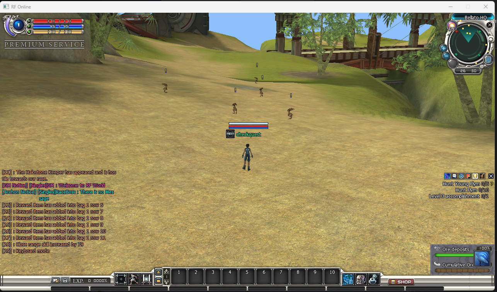
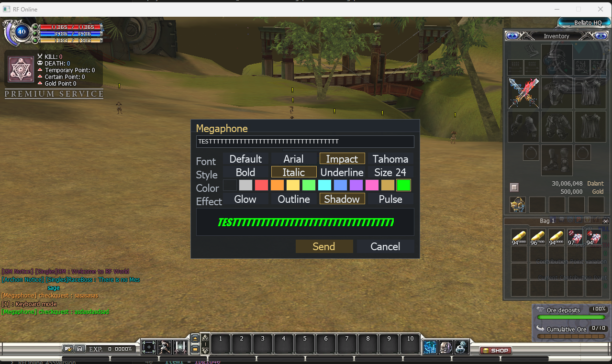
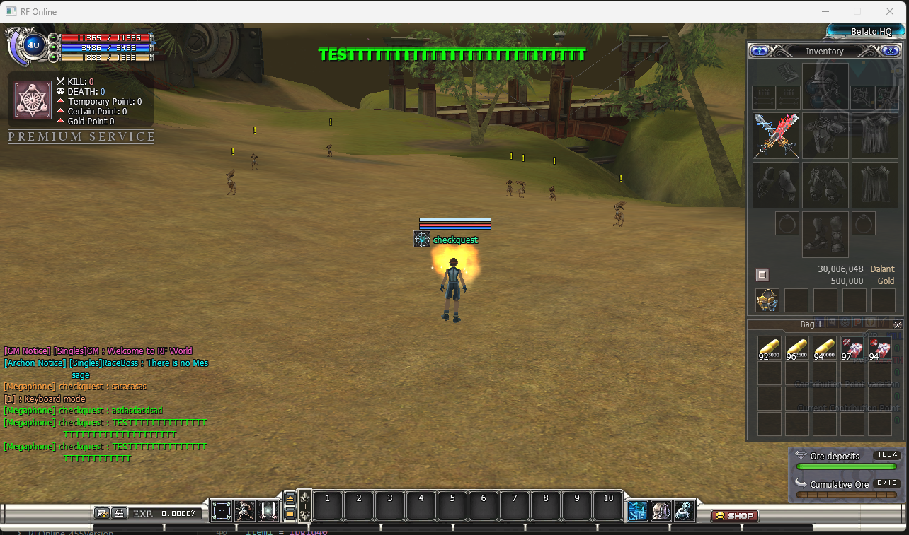
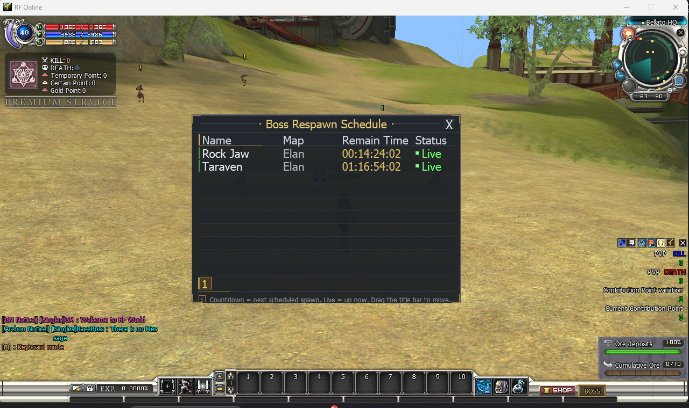
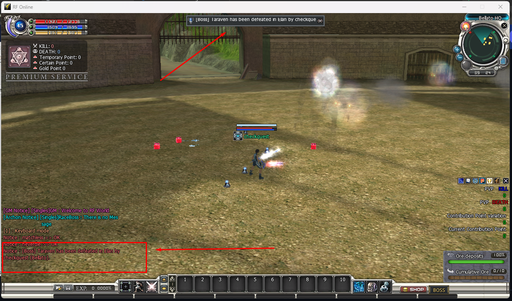
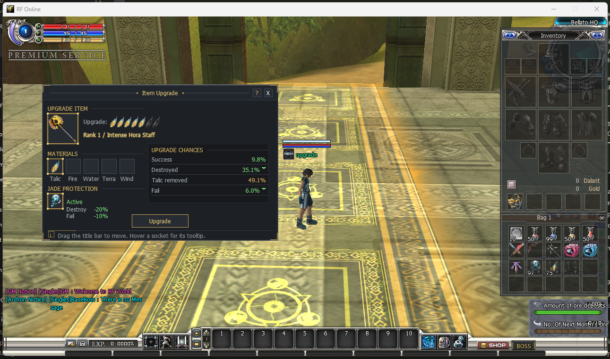
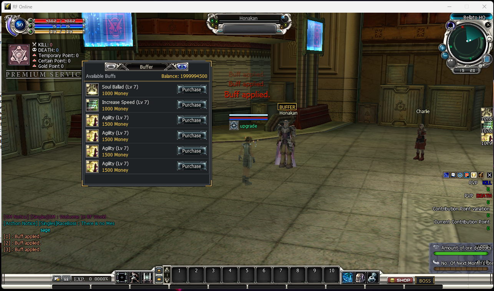
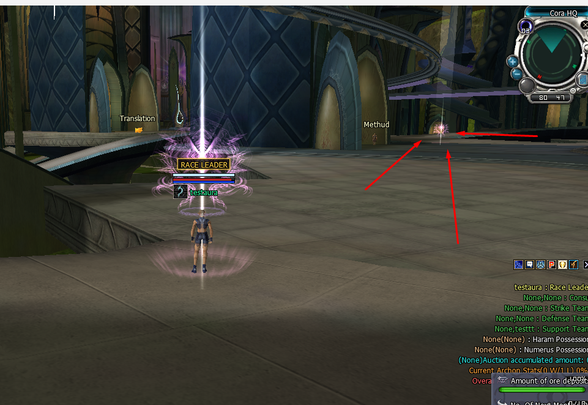

Modules / Features
Optional gameplay and interface features that ship switched off. Each one is turned on by editing a single line in a small text file — no programming, no recompiling.
⚙How modules work
Every module is a small .ini file in the Zone server's .Server\Zoneserver\RF_Bin\Modules\ folder. They all behave the same way:
- One switch. Each file has a
[General]section with anEnablekey.Enable = 0is off,Enable = 1is on. - Off by default. They all ship at
Enable = 0, so nothing changes until you deliberately turn one on. - Required at boot. Do not delete these files — a missing module file stops the Zone server from starting.
- Hot-reloaded. Edit and save the file while the server is running and it picks up the change live. No restart needed.
- Edit with Notepad. Right-click the file → Open with → Notepad, change the number, File → Save.
There are two kinds of module:
- Server — changes something the server does. The player's game client is not told about it.
- Client — changes something the player sees. The server pushes the on/off state to every client when a player enters the world (and after each live reload), so the game client turns its matching half on or off automatically.
| Module | Config file (in Modules\) | Type | What it does |
|---|---|---|---|
| Welcome Window | WelcomeWindow.ini | Client | Announcement window shown once when a player enters the game |
| Quest Monster Marks | QuestMonster.ini | Client | Yellow markers above the monsters a player still needs to kill for a quest |
| Chat Log | ChatLog.ini | Server | Writes every in-game chat line to a log file for moderation and audit |
| Box Stack | BoxStack.ini | Server | Lets box-open rewards merge into an existing inventory stack instead of using a new slot each time |
| Potion Effects | PotionManager\PotionManager.ini | Server | New potion rewards (money, points, buffs, premium, megaphone…) plus endless potions |
| Potion Lua Overrides | PotionLua\PotionLua.ini | Server | Override what a specific potion does from one Lua list, without editing item scripts |
| Megaphone | Megaphone\Megaphone.ini | Server Client | Players right-click a configured potion to compose a styled announcement (font, color, effects) that is broadcast to every player and mirrored in chat |
| Boss Respawn Schedule | BossRespawnManager\BossRespawn.lua | Server Client | Pit bosses respawn on exact weekly / one-off date-times you write in one simple Lua file, with an in-game countdown window on the BOSS button |
| Election Manager | ElectionManager\ElectionManager.ini | Server | Governs the patriarch / archont (race leader) election: candidate register price, extra vote / register eligibility gates, and whether the live vote-score list is shown |
| Item Upgrade & Jade Protection | ItemUpgradeProtection\ItemUpgradeProtection.lua | Server | Jade materials slotted in the upgrade window lower the Destroy / Fail odds (and raise Success) by the percentages you set, and the Upgrade Chances panel shows the exact same numbers the server actually rolls against |
| NPC Buffer | NPCManager\NPCBuffer.ini + NPCBuffer.lua | Server Client | Turns a chosen store NPC into a “buffer” that sells self-buffs for dalant; the NPC shows a gold BUFFER nameplate and a glowing aura in the world, and a Buffer window lists the buffs with a Purchase button |
| Race Leader Effect | RaceLeaderEffect\RaceLeaderEffect.ini | Server Client | The glowing world aura a race leader / council member wears, plus the percent Attack / Defence / HP bonus they gain while in office — tuned per race and per rank |
| Chip HP Bars | ConfigurationManager\ClientManager.ini | Client | Shows or hides the three race-crystal (Belato / Cora / Accretia) HP bars on the HUD beside the radar |
| Module Logs | — (automatic) | Server | Every feature module writes a plain-language log into one ModulesLog folder, with a single _ALL PROBLEMS file that lists anything that went wrong |
Modules are documented here one at a time, as each one is tested. More will appear in this table once they are verified.
Welcome Window

What it does — and why you would use it
The Welcome Window is an announcement panel that pops up once, when a player first enters the game world. Think of it as the "news board" every MMO shows on login: patch notes, event dates, server rules, a welcome message, and a button to your website.
Use it to:
- Greet players and set the tone for your server.
- Announce the latest patch, event, or maintenance window without posting somewhere players will not look.
- Point players at your website, Discord, or donation page with one click.
The feature has two halves that work together:
| Half | File | Its job |
|---|---|---|
| Server switch | .Server\Zoneserver\RF_Bin\Modules\WelcomeWindow.ini | Decides whether the window opens at all. One Enable key. |
| Client content | .Client\DataTable\<language>\WelcomeWindow.ini | Decides what is inside the window: the text, announcements, footer and website button. |
The window appears once per play session. If you later flip the switch on the server, players already in the world are not interrupted with a second popup — they see it on their next entry.
How to activate it
-
Turn the feature on (server). Open .Server\Zoneserver\RF_Bin\Modules\WelcomeWindow.ini in Notepad and change the
Enableline under[General]:
Save the file. A running Zone server reloads it immediately and pushes the new state to clients; if the server is not running yet it simply starts with the feature on.[General] Enable = 1 -
Write the message players will see (client). Open .Client\DataTable\en-ph\WelcomeWindow.ini (the
en-phfolder is the English language table) and edit the sections described below. Save it. See Write the content. -
(Optional) Add artwork. Drop a
welcome.sprimage into the client to show a banner beside the announcements. See Optional artwork. - Test it. Start the servers, launch the client, log in and enter the world — the window appears. To see edits you made to the text, close and reopen the game client (it reads the file on entry).
Enable = 0 the window never opens, no matter what the client file says. With Enable = 1 but an untouched client file, the window opens showing the shipped sample text. Set the server switch and author the client file.How to write the content (client file)
Open .Client\DataTable\en-ph\WelcomeWindow.ini. The client auto-detects two formats — use whichever suits you. You never need to touch the game's code.
Format 1 — the redesigned announcement panel (recommended)
This is used as soon as the file contains any of the modern keys below. It opens a purpose-built panel with a header, a welcome intro, up to 8 announcements (3 visible at a time, with paging arrows), a footer line and an optional website button.
[Header]
Title = WELCOME TO RF ONLINE
[Welcome]
Title = WELCOME, WARRIOR.
Description = Stay informed about the latest updates, patches, and events.
[Announcement1]
Title = Server Grand Opening
Description = Join us this weekend for double EXP and boss spawns.
Date = 2026-09-15
Enabled = 1
URL = https://example.com/news/1
[Announcement2]
Title = Patch 1.2 Notes
Description = New dungeon, bug fixes and balance changes.
Date = 2026-09-10
Enabled = 1
[Footer]
Message = Thanks for playing on our server!
[Website]
Enabled = 1
URL = https://example.com
Label = VISIT WEBSITEEvery key is optional and falls back to a safe default. Here is what each one controls:
| Section & key | What it does |
|---|---|
[Header] Title | The large heading across the top of the panel. |
[Welcome] Title | The intro headline under the header. |
[Welcome] Description | A one- or two-line intro sentence. |
[Announcement1..8] Title | Announcement headline. An empty title skips that row. |
[AnnouncementN] Description | The announcement body (first two lines are shown per row). |
[AnnouncementN] Date | A short date/label shown on the row. Free text — type whatever you like. |
[AnnouncementN] Enabled | 1 shows the row, 0 hides it. Hidden rows are skipped and the rest renumber automatically. |
[AnnouncementN] URL | Optional. Clicking the row opens this web address (http:// or https:// only). If omitted, the row uses the [Website] URL when that is enabled. |
[Footer] Message | A small line along the bottom of the panel. |
[Website] Enabled | 1 shows the website button, 0 hides it. |
[Website] URL | Where the button goes (http:// or https:// only; it opens in the player's normal browser). |
[Website] Label | The text on the button, e.g. VISIT WEBSITE. |
Format 2 — the legacy message box
If none of the modern keys are present, the client falls back to the classic scrollable message box driven by a single [General] Text line. Handy for a quick one-paragraph notice.
[General]
Text = Welcome to RF Online.\n\nPatch notes and event announcements go here.Authoring rules (both formats)
- One line per value. A real line break ends the value. To break a line inside the window, type the two characters
\n(backslash-n); the window turns it into a line break. - No
;inside a value. A semicolon starts a comment in these files and will cut your text short. - Keep it short. Titles are capped at 128 characters, descriptions and the footer at 256; longer text is truncated, and text wider than its panel is clipped with
.... - Web addresses must start with
http://orhttps://. Anything else is ignored. - Lines starting with
;are comments — the shipped file is full of helpful notes you can leave in place.
Optional artwork
You can show a banner image in a panel to the right of the announcements. It is completely optional — without it the announcement rows simply use the full width.
- The image is a sprite file named
welcome.spr. The client looks for it first in .Client\SpriteImage\<language>\ (for exampleen-ph), then in .Client\SpriteImage\common\. - You make it with
spr2png.exe(in the_tools\folder), a tiny drag-and-drop converter that turns a normal PNG into a.spr— and back again. No commands, no Python, nothing to install.
Make new artwork
- Save your banner as a PNG named
welcome.png. A power-of-two size such as 256×256 works best. - Drag
welcome.pngontospr2png.exe. A black window flashes and writeswelcome.sprin the same folder as your PNG. - Copy that
welcome.sprinto .Client\SpriteImage\common\ (or your<language>folder), then restart the game client to see it.
Edit artwork you already have
- Drag the existing
welcome.sprontospr2png.exe. It writes an editablewelcome.pngbeside it. - Open that PNG in any image editor, change it, save it.
- Drag the edited PNG back onto
spr2png.exe. It rewriteswelcome.sprand keeps your old one aswelcome.spr.bakin case you want to undo.
spr2png.exe <file.spr|file.png> ...
drop a .spr -> <name>.png (multi-frame: <name>_a#_f#.png per frame)
drop a .png -> <name>.spr (previous .spr kept as .spr.bak)- Use a power-of-two size (128, 256 or 512) for best results — the tool only prints a warning otherwise. Non-square art also works; the window scales it to fit.
- No rebuild is needed: the image is loaded when the client starts, so just restart the game client after replacing it.
- To remove the artwork, delete or rename
welcome.spr; the window falls back to full-width rows.
assemble_deploy.bat — but only if the client does not already have one. This is deliberate: re-deploying never overwrites a live host's own patch notes. Delete the file from the client's DataTable folder to re-copy the template.Quest Monster Marks

! above it — here the two Flym hunts listed on the right of the screen.What it does — and why you would use it
Quest Monster Marks float a bright yellow exclamation mark (!) above every live monster that a player still needs to kill for one of the quests they have accepted. It turns “hunt ten of something across a big field” from a search into a straight walk.
Use it to:
- Help new players find quest targets without re-reading quest text.
- Speed up grind quests on crowded or large maps.
- Make it obvious at a glance which monsters are worth fighting right now.
| Half | Where it lives | Its job |
|---|---|---|
| Server switch | .Server\Zoneserver\RF_Bin\Modules\QuestMonster.ini | Decides whether clients draw the marks. One Enable key. |
| Client half | Built into the game client — there is no client file to edit. The client works out which monsters to mark from the player's own quest journal. | |
How to activate it
-
Turn the feature on (server). Open .Server\Zoneserver\RF_Bin\Modules\QuestMonster.ini in Notepad and change the
Enableline under[General]:
Save the file. A running Zone server reloads it immediately and pushes the new state to clients; if the server is not running yet it simply starts with the feature on.[General] Enable = 1 - Nothing to do on the client. There is no client setting for this module — the mark is built into the game client and appears as soon as the server switch is on.
-
Test it. Start the servers, log in, accept any “kill X monsters” quest and look at those monsters — each live one carries a yellow
!. Players already in the world pick the change up on their next entry or when the server pushes the reload.
QuestMonster.ini is required when the Zone server starts — deleting it stops the server from booting. To disable the feature, set Enable = 0 instead.What gets marked
- Monsters only. Players, NPCs and other character types are never marked.
- Only unfinished kill objectives. A monster is marked while it is the target of a “kill this monster” objective the player has not finished. The moment the required count is reached the mark disappears — including when the last needed monster dies.
- It always agrees with the quest text. The client marks exactly the monster the quest description names, so a mark never points at the wrong creature.
- Live and on screen only. Dead monsters, and monsters not currently drawn, get no mark.
- Updates by itself. The target list is refreshed about twice a second, so accepting, finishing or abandoning a quest changes the marks within half a second — no relog needed.
The mark is a plain yellow ! drawn one text line above where the monster's nameplate would sit, so it stays readable without covering the monster.
Chat Log
What it does — and why you would use it
Chat Log writes every in-game player chat line to a plain text file on the server, timestamped and tagged with its channel and the sender's character name. It is your factual record of what was actually said in the world.
Use it to:
- Settle player disputes and abuse reports with a written record.
- Keep an audit trail of GM and staff conduct.
- Spot spam, scams or harassment as patterns over time.
| Part | Where it lives | Its job |
|---|---|---|
| Server switch | .Server\Zoneserver\RF_Bin\Modules\ChatLog.ini | Turns logging on or off. One Enable key. |
| Log file | .Server\Zoneserver\RF_Bin\ModulesLog\ChatLog.log | Created automatically beside the Zone server .exe; appended to, never overwritten. |
ModulesLog folder — it never touches the client's NetLog.How to activate it
-
Turn the feature on (server). Open .Server\Zoneserver\RF_Bin\Modules\ChatLog.ini in Notepad and change the
Enableline under[General]:
Save the file. A running Zone server reloads it immediately and starts writing from the next chat line; if the server is not running yet it simply starts with logging on.[General] Enable = 1 - Nothing to do on the client. Players see no difference — chat behaves exactly as before, it is only also recorded.
-
Read the log. Open .Server\Zoneserver\RF_Bin\ModulesLog\ChatLog.log in Notepad any time. The
ModulesLogfolder is created the first time a line is logged.
ChatLog.ini is required when the Zone server starts — deleting it stops the server from booting. To stop logging, set Enable = 0 instead; no further lines are written.The log file — what each line means
Each chat line becomes one line in the file:
[2026-09-16 20:14:03] [ALL] checkquest: hello everyone
[2026-09-16 20:14:11] [PARTY] checkquest: group up at the gate
[2026-09-16 20:14:26] [WHISPER] checkquest -> BellatoHero: trade?
[2026-09-16 20:15:02] [GUILD] BellatoHero: war at nine- Date and time as
[YYYY-MM-DD HH:MM:SS], using the server PC's clock. - Channel in the second brackets — for example
ALL,RACE,PARTY,MAP,GUILD,WHISPER,NOTICE,RACEBOSS. - Sender character name before the colon.
- Whispers also record who received them, written as
sender -> recipient. - The text after the colon is exactly what was broadcast — the log hooks the chat after the server validates it, so rejected lines are not recorded.
Looking after the file
- The file is appended to and never truncated, so it grows for as long as logging is on. Archive or move old copies yourself during a quiet period; switch logging off first (
Enable = 0) if you want a clean cut. - Writing is best-effort: if the disk is full or the file is locked, a line is skipped rather than chat being blocked or corrupted. Players never notice a logging failure.
Box Stack
What it does — and why you would use it
Box Stack changes what happens when a player opens a box item — treasure boxes, golden boxes, crates and anything else driven by the item-exchange table. By default every open drops its reward into a brand-new inventory slot, even when the reward is something stackable you already carry. With this module on, a stackable reward instead merges into the stack you already have when that stack has room.
Use it to:
- Stop crate-opening from chewing up inventory slots — opening a crate of potions, ore or refinement stones fills the stack you already hold.
- Keep inventories tidy for players who mass-open boxes during events.
- Reduce the “inventory full” interruptions when a box reward is something you already stack.
| Part | Where it lives | Its job |
|---|---|---|
| Server switch | .Server\Zoneserver\RF_Bin\Modules\BoxStack.ini | Turns the merge behaviour on or off. One Enable key. |
| Client half | Already built into the game client and inert while the module is off — there is no client file to edit and no client switch. | |
How to activate it
-
Turn the feature on (server). Open .Server\Zoneserver\RF_Bin\Modules\BoxStack.ini in Notepad and change the
Enableline under[General]:
Save the file. A running Zone server reloads it immediately and the next box a player opens merges; if the server is not running yet it simply starts with the feature on.[General] Enable = 1 - Nothing to do on the client. The matching client half is already built in — no file, no setting and no rebuild.
- Test it. Start the servers, log in, make sure you already hold a partial stack of a stackable box reward, then open a box that rolls that item — the reward tops up your existing stack instead of taking a new slot.
BoxStack.ini is required when the Zone server starts — deleting it stops the server from booting. To go back to stock behaviour, set Enable = 0 instead.What gets merged — and what does not
- Only box opens. This affects opening a box item through the item-exchange table. It does not change picking loot up off the ground — ground pickup already stacks in stock and is left exactly as it was.
- Only stackable rewards. A non-stackable item always takes a new slot, as before.
- Only a matching stack with room. The reward merges into an existing stack only when that stack is the same item, is not locked, is a normal (not lend or timed) item in the same timed-item bucket, and would not overflow the stack cap of 99.
- Lend and timed rewards never merge. They carry their own expiry, so they always take a new slot exactly like stock.
- No match, no room → stock behaviour. If nothing qualifies, the reward simply goes into a new slot, so enabling the module can never lose or misplace an item.
With the module off, behaviour is identical to stock: every box open grants its reward to a new slot.
Potion Effects
What it does — and why you would use it
Potion Effects lets a potion grant a custom reward when it is drunk — money, points, cash, premium time, a megaphone broadcast, a spawned monster, or a temporary Skill / Force / Class-skill buff. Stock potions can only run the built-in effect scripts; this module opens up a new range of effect types (160–173) you can attach to any potion. It also adds an endless potion that is never consumed.
Use it to:
- Sell or reward “buff potions” that apply a real Skill / Force / Class-skill buff for a set time.
- Hand out money, points, cash or premium days from a single drinkable item.
- Make event or VIP potions that never run out (endless).
- Let players broadcast a megaphone message or summon a monster from an item.
Gold Capsule: +4000 Dalant, or for a buff …: Skill buff "Concession" (AF004) applied - Lv 7, 1080s. Players always see what the potion did.| Part | Where it lives | Its job |
|---|---|---|
| Server switch | .Server\Zoneserver\RF_Bin\Modules\PotionManager\PotionManager.ini | Turns the extended effects and the endless potion on or off. One Enable key. |
| Potion script | The potion's own effect script (data table) | Says which effect a potion runs and its value — see The effect list. |
| Client half | None — this is server-only. Players see no toggle and no client file is involved. | |
How to activate it
-
Turn the feature on (server). Open .Server\Zoneserver\RF_Bin\Modules\PotionManager\PotionManager.ini in Notepad and change the
Enableline under[General]:
Save the file. A running Zone server reloads it immediately; if it is not running yet it simply starts with the feature on.[General] Enable = 1 -
Give a potion an effect. In that potion's effect script set three fields:
TempEffectTypeto one of 160–173 (from the list below),TempParamCodeto-1, andTempValue1to the reward amount, monster index or buff level the effect needs. -
(Optional) Make it endless. Set the potion's
KindCltto255in its PotionItem script (server side) and drinking it no longer consumes it. - Test it. Start the servers, log in, drink the potion — the reward is granted once and a system message describes it.
PotionManager.ini is required when the Zone server starts — deleting it stops the server from booting. To go back to stock behaviour, set Enable = 0 instead. With it off, a potion whose effect type is 160–173 does nothing, exactly as stock.The effect list
Set TempEffectType to one of these. TempValue1 is the amount, index or level named in the last column.
| Type | Reward | TempValue1 means |
|---|---|---|
| 160 | Dalant | amount |
| 161 | Gold | amount |
| 162 | Certain Point | amount (PvP cash bag; needs level 39 + 2nd class) |
| 163 | PvP Point | amount (needs level 40 + 2nd class) |
| 164 | Processing Point | amount (Action Point System action 0 must be live) |
| 165 | Hunter Point | amount (Action Point System action 1 must be live) |
| 166 | Gold Point | amount (Action Point System action 2 must be live) |
| 167 | Monster spawn | monster index from the monster script (spawns 1) |
| 168 | Cash | amount (in-session; saving it needs the cash DB backend) |
| 169 | Premium days | days (extends billing remain-time; needs the billing backend) |
| 170 | VIP megaphone | a server-wide global announcement (the same prominent notice the GM greeting uses) showing the drinker's character name + the potion's own name; value 1–4 is still accepted but no longer limits the scope |
| 171 | Skill buff | applies the Skill record's continuous buff (buff level 1–7) |
| 172 | Force buff | applies the Force record's continuous buff (buff level 1–7) |
| 173 | Class-skill buff | applies the ClassSkill record's continuous buff (buff level 1–7) |
- Buffs (171–173). These apply the record's temporary buff — its strength and duration come from the record's own per-level data. Only records that actually have a continuous buff (a
ContEffectTypeof 0 or 1) do anything; anything else is a safe no-op and the potion is not consumed. Here the value is the record's index; the Potion Lua module lets you name it by code instead. - Reward goes to the drinker, once. The effect is applied to the player who drinks the potion.
- Backend-dependent rewards. Cash (168) and premium days (169) last for the session unless the matching cash / billing database backend is running; points (164–166) need their Action Point System action to be live.
Potion Lua Overrides
What it does — and why you would use it
Potion Lua Overrides lets you change what a specific potion does from one plain text list, keyed by the potion's item code — instead of editing that potion's effect script in the data tables. When a potion's item code is in the list, it uses your effect and its normal script is skipped. Potions you do not list behave exactly as before.
Use it to:
- Turn an ordinary potion into a reward or buff potion without touching item data.
- Apply a named Skill / Force / Class-skill buff by its code (for example
AF004) at a chosen level. - Set up event potions quickly and change them live while the server runs.
| Part | Where it lives | Its job |
|---|---|---|
| Server switch | .Server\Zoneserver\RF_Bin\Modules\PotionLua\PotionLua.ini | Turns the overrides on or off. One Enable key. |
| Override list | .Server\Zoneserver\RF_Bin\Modules\PotionLua\PotionLua.lua | The list of item codes and the effect each one gets. |
| Client half | None — server-only. No client file, no toggle, no rebuild. | |
How to activate it
-
Turn the feature on (server). Open .Server\Zoneserver\RF_Bin\Modules\PotionLua\PotionLua.ini in Notepad and set:
Save the file.[General] Enable = 1 - List your potions. Open .Server\Zoneserver\RF_Bin\Modules\PotionLua\PotionLua.lua and add one line per potion you want to override. See Write the overrides. Save it.
- Test it. Start the servers, log in and drink one of the listed potions — it applies your effect and shows the system message. Both files reload live, so you can edit and re-drink without a restart.
PotionLua.ini and PotionLua.lua at startup — deleting either stops it from booting. To switch the overrides off, set Enable = 0 in the .ini; every potion then uses its normal script again.How to write the overrides
Each line in PotionLua.lua maps one potion item code to an effect:
PotionLua = {
["ipgld30"] = { effect = 160, value = 1000 }, -- +1000 Dalant
["ipgld39"] = { effect = 169, value = 7 }, -- +7 premium days
["ipgld41"] = { effect = 171, value = "AF004", level = 7 }, -- apply Skill AF004's buff at level 7
["ipgld42"] = { effect = 172, value = "8000", level = 7 }, -- apply Force 8000's buff at level 7
["ipgld43"] = { effect = 173, value = "7F018", level = 7 }, -- apply ClassSkill 7F018's buff at level 7
}| Part | What it is |
|---|---|
["itemcode"] | The potion's item code (from the item table), as a quoted string. |
effect | The effect type, 160–173 — the same list as The effect list. |
value | The reward amount; for 171/172/173 it is the Skill / Force / ClassSkill code as a quoted string (a plain number is read as a record index instead). |
level | Optional. For 171/172/173 it is the buff level 1–7 (default 7), which sets the buff's strength and duration from the record's per-level data. |
- Only listed codes change. Any potion whose code is not a key here behaves exactly as stock.
- Overrides win. When a code is listed and the module is on, your effect is applied and the potion's own script is skipped.
- Buff codes must be real. For 171/172/173 use a code that exists in the Skill / Force / ClassSkill data and actually has a continuous buff, or nothing is applied (and the potion is not consumed).
- Live editing. Saving either file is picked up on the next game tick — no restart.
Megaphone (Player Announcements)


[Megaphone] Name : message.What it does — and why you would use it
The Megaphone turns a potion item into a player-authored announcement. Instead of the stock behaviour (the game shouting the potion's name automatically), the player right-clicks the potion and gets a composer window where they type their own message and style it:
- Font: Default, Arial, Impact or Tahoma.
- Style: Bold, Italic, Underline and Size 24 (combinable).
- Color: twelve swatches, from plain white to bright neon.
- Effect: Glow, Outline, Shadow or Pulse (combinable).
A live Preview strip shows exactly how the message will look before it is sent. On Send the server consumes one potion and broadcasts the styled message to every live player on every map and every race:
- It is projected across the top-center of the screen, above the action, always in front.
- Exactly one message is projected at a time: it is held for at least 6 seconds, then fades out. Any announcement that arrives while one is on screen waits in a FIFO standby queue and only fades in after the current message has finished — messages never jump the queue or stack on top of each other.
- The same message is mirrored into the chat log and bottom chat bar as
[Megaphone] Name : message, keeping the chosen color and the bold / italic / underline / glow / shadow styling.
Cancel (or Esc) closes the composer and the potion is not consumed — players only pay when they actually send.
How to activate it
-
Turn the feature on. Open .Server\Zoneserver\RF_Bin\Modules\Megaphone\Megaphone.ini in Notepad and set
Enable = 1under[General]:
Save the file. A running Zone server hot-reloads it (checked at most once every 2 seconds) — no restart needed.[General] Enable = 1 CooldownSec = 10 -
List the potion item codes. Under
[Items], setItemNumto how many codes follow, then oneItem<n> = codeline each. The code is the potion's item code from the item table (for exampleipgld40, the stock VIP megaphone potion):
Listed codes are removed from the stock automatic name-broadcast, so a megaphone potion never double-posts.[Items] ItemNum = 1 Item1 = ipgld40 - Get the potion to players. Sell it in a shop, drop it, or grant it with a GM command — whatever fits your economy. Only players holding a listed potion can compose an announcement.
- Test it. In game, right-click the potion → the composer opens → type a message, pick a style, press Send. The banner appears at the top of your screen and in chat; a second client logged in anywhere on the server sees the same. Press Enter to send and Esc to cancel from the keyboard.
Enable = 0 the potion behaves like a normal potion. With Enable = 1 but an empty / wrong item list, right-clicking simply runs the potion's normal effect. Set the switch and list the exact item codes you want to act as megaphones.The config file
One file, Modules\Megaphone\Megaphone.ini, beside the other module files in the Zone server's Modules folder:
| Key | Section | Meaning |
|---|---|---|
Enable | [General] | 0 = off (listed potions behave normally), 1 = on (listed potions open the composer). |
CooldownSec | [General] | Seconds each player must wait between accepted sends. A send during cooldown is rejected and the potion is not consumed. 0 = no cooldown. |
ItemNum | [Items] | How many Item<n> lines follow, counted from Item1 with no gaps. |
Item1, Item2, … | [Items] | Potion item codes that act as megaphones (the same codes used by Potion Lua Overrides). |
Rules & limits
- One potion per send. Sending consumes exactly one item from the stack; cancelling consumes nothing.
- Cooldown rejects are free. A send refused by
CooldownSecleaves the stack untouched. - Message length. Up to 127 characters; control characters are stripped and an empty message is refused (without consuming).
- Screen discipline. One banner on screen at a time, held at least 6 seconds plus a short fade; everything else waits in a strict FIFO standby queue (capped at 32) and projects in send order.
- Everyone, everywhere. The broadcast reaches every live player on the server — all maps and all races — and each of them also gets the chat-log mirror.
- Chat mirror styling. The chat line keeps the chosen color and bold / italic / underline / glow / shadow. Size 24 and Pulse are banner-only (chat rows have a fixed height and chat history is static).
- No double posts. Item codes listed here are excluded from the stock effect-170 automatic broadcast, so enabling the module never produces two messages for one potion.
Boss Respawn Schedule

What it does — and why you would use it
Stock RF Online respawns pit bosses on each map's random monster regen — no fixed time, no announcement, no way to tell players when the next fight is. This module takes the pit bosses off the random regen and respawns them exactly on the times you write down:
- Weekly slots — recurring spawns like “every Friday at 21:30”.
- One-off events — exact date-and-time spawns like “2026-12-25 20:00” for a Christmas boss; each fires once and is remembered, so a server restart never spawns it twice.
- Auto-despawn — optionally kill the boss N minutes after spawn if nobody did, so stale bosses never clutter the map.
- Zone announcements — tell every player when a boss spawns and when it dies; the defeat line names the player who landed the killing blow and their race.
- Exactly one instance — every stock respawn path (the random regen and the boot-time boss schedule) is suppressed for managed bosses, so a slot spawns one boss — never a duplicate standing on top of it.
- An in-game schedule window — a BOSS button beside SHOP opens a panel listing every managed boss with an accurate countdown, so players never have to ask “when is Rock Jaw?”.
Notice : [Boss] Rock Jaw has appeared in Elan.
Notice : [Boss] Rock Jaw has been defeated in Elan by Artemis (Bellato).The defeat line credits the player the kill itself is credited to (the loot taker), with one of the three race names. When no player is credited — a guard tower finished the boss, for example — the line stays anonymous.

The schedule lives in one plain-text Lua file written for non-programmers. The old Odin-style BossRespawnManager.ini plus per-map .ini files still work exactly as before when the Lua file is switched off.
BossRespawn.lua has Enable = true, the zone follows that file and ignores BossRespawnManager.ini completely. With Enable = false the Lua file is ignored and the INI behaves exactly like it always did. The two can never fight over the same boss.How to activate it
-
Turn the Lua schedule on (recommended). Open .Server\Zoneserver\RF_Bin\Modules\BossRespawnManager\BossRespawn.lua in Notepad and set
Enable = truenear the top:
Save the file. A running Zone server re-reads it a moment later — no restart needed.BossRespawn = { -- Master switch for this file. true = the zone follows BossRespawn.lua. Enable = true, -
Or use the classic INI instead. Leave
Enable = falsein the Lua file, then open Modules\BossRespawnManager\BossRespawnManager.ini and set:
Each[General] Enable = 1 MapNum = 1 Map0 = ElanMap<n>name points at a per-map file in the same folder (hereElan.ini) holding the old Odin-format schedule. This path is kept for servers already running on the INI. -
Write your boss list. Add one block per pit boss under
Bosses =— see Write the schedule. -
Check it in game. Press the BOSS button beside SHOP: the window lists every managed boss with its countdown. A boss whose slot just passed spawns within a second of the save, and the zone gets the announcement line when
Announce = true.
BossRespawnManager.ini and BossRespawn.lua at startup — deleting either stops the server from booting. To switch the feature off, set Enable = false in the Lua file and Enable = 0 in the INI.How to write the schedule
Everything is one list of boss blocks. Copy a block, change the map / code / times, add as many as you like:
BossRespawn = {
Enable = true, -- master switch: true = the zone follows THIS file
Announce = true, -- tell the whole zone when a boss spawns / dies
Bosses = {
{
Map = "Elan", -- map name (the same name the old .ini used)
Code = "0AB07", -- pit boss monster code from the monster table
Weekly = { -- recurring weekly spawn times
{ day = "Friday", hour = 21, minute = 30 },
{ day = "Saturday", hour = 21, minute = 30 },
},
},
{
Map = "Elan",
Code = "0AF07",
DeathMin = 120, -- auto-kill 2 hours after spawn if nobody killed it
Weekly = {
{ day = "Friday", hour = 21, minute = 30 },
},
Events = { -- one-off exact-date spawns
"2026-12-25 20:00", -- Christmas event
"2026-12-31 23:00", -- New Year's Eve event
},
},
},
}| Key | Where | Meaning |
|---|---|---|
Enable | top | true = the zone follows this file and ignores the INI; false = this file is ignored. |
Announce | top | true = broadcast a line to every player when a managed boss spawns and when it dies. The defeat line carries the killer's name and race. |
AnnounceBlacklist | top | Boss codes that stay silent on death only (their spawn is still announced). |
Map | per boss | Map name, exactly as the old per-map .ini named it (for example Elan). |
Code | per boss | Monster record code of the pit boss (the same code the old .ini used). |
DeathMin | per boss | Kill the boss this many minutes after spawn if nobody did. 0 or omitted = never auto-kill. |
Weekly | per boss | List of { day, hour, minute }. day = "Sunday"…"Saturday" (or a number 0–6, 0 = Sunday), hour 0–23, minute 0–59. |
Events | per boss | List of one-off spawns as text "YYYY-MM-DD HH:MM". Each fires once, then is remembered — restarting the server does not spawn it again. |
- All times are the server PC's local time, 24-hour clock (
19= 7 pm). - Weekly only, Events only, or both — a boss spawns when the most recent slot or event time has passed since it last spawned.
- The server keeps its own memory. Last-spawn / killed state is written to a small per-map
.inibeside the config so a restart never re-fires an event or doubles a spawn. Do not hand-edit those files while the server is running. - Comments are your friend. Anything after
--on a line is ignored — label your bosses freely.
The in-game schedule window
A BOSS button sits immediately right of SHOP on the bottom bar. Pressing it opens the Boss Respawn Schedule panel (the screenshot above); pressing it again, the X, or Esc closes it. The window is draggable by its title bar and remembers where you put it between opens.
| Column | What it shows |
|---|---|
| Name | The boss's display name from the monster table. |
| Map | The map the boss is managed on. |
| Remain Time | A live DD:HH:MM:SS countdown to the next scheduled spawn slot. It ticks every second on your screen and is re-synced from the server every ~30 seconds while the window is open. |
| Status | Live the boss is up right now — the countdown then shows the next scheduled slot, i.e. when it respawns if the current one dies. Down the boss is waiting to respawn and the countdown is the respawn moment itself. |
BossRespawn.lua when its Enable = true, otherwise BossRespawnManager.ini. The UI can never disagree with the schedule the map really follows; with the module off the window simply says so.- Pagination. Ten bosses per page; the numbered tabs at the bottom left switch pages (up to 8).
- Row accents. A green tick on a row's left edge means Live, steel means Down — readable at a glance.
- “Spawning...” appears for the moment between a countdown reaching zero and the boss actually coming up.
Election Manager
What it does — and why you would use it
Election Manager governs the periodic patriarch / archont election — the race-leader vote where players register as candidates and everyone else votes. Stock RF Online already runs that election with a fixed set of rules; this module lets you tune three things from one text file without touching the engine:
- The candidate register price — how many dalant it costs to put your name forward (stock
10000000). - Extra eligibility gates — optional minimum level, play time, contribution point, PvP cash bag and class grade layered on top of the stock vote / register checks.
- The live vote-score list — whether players can see the running candidate scores during the vote.
Use it to:
- Raise or lower the cost of running for patriarch to fit your economy.
- Require a minimum level or play time before a player may vote or register, so brand-new characters cannot swing the election.
- Gate candidacy behind a contribution point / PvP cash bag threshold to keep serious candidates in.
- Hide the running scores for a “blind” vote, or leave them visible exactly as stock does.
| Part | Where it lives | Its job |
|---|---|---|
| Server switch | .Server\Zoneserver\RF_Bin\Modules\ElectionManager\ElectionManager.ini | Turns the module on or off and holds the register price, the vote / register gates and the score-visibility flags. |
| Client half | None — this is server-only. The election / candidacy screens are the stock client and simply obey whatever the server allows; there is no client file to edit and no client toggle. | |
Enable = 0 every setting is ignored (exact stock behaviour), and even with Enable = 1 the shipped values reproduce stock: the price stays 10000000, scores stay visible, and every gate is left at its -1 / -1.0 sentinel (= “no extra gate”). Turning the module on changes nothing until you edit a value.How to activate it
-
Turn the feature on. Open .Server\Zoneserver\RF_Bin\Modules\ElectionManager\ElectionManager.ini in Notepad and set
Enable = 1under[General]:
Save the file. A running Zone server hot-reloads it — no restart needed. On its own this still behaves exactly like stock; the next steps are what actually change the election.[General] Enable = 1 -
Set the price and gates you want. Change the register price, and replace the
-1/-1.0sentinels with real minimums. For example, charge5000000dalant to register and require level 30 to both vote and register:
Any gate you leave at its sentinel simply defers to the stock rule.[Register] PatriarchRegisterPrice = 5000000 Level = 30 [Vote] Level = 30 -
(Optional) Hide the live scores. Still under
[General], setScoreHide = 1(orScoreListShow = 0) to suppress the running vote-score list:
Scores are shown only when[General] ScoreListShow = 1 ScoreHide = 1ScoreListShow = 1andScoreHide = 0. - Nothing to do on the client. The stock election / candidacy screens pick the new rules up automatically — no file, no setting and no rebuild.
- Test it. Start the servers, log in during an election period, open the candidacy screen and try to register a candidate and to vote. The server applies your price and gates; a character below a gate is refused exactly as it would be for a stock requirement.
ElectionManager.ini is required when the Zone server starts — deleting it stops the server from booting. To go back to stock behaviour, set Enable = 0 instead.The config file
One file, Modules\ElectionManager\ElectionManager.ini, in its own ElectionManager folder beside the other modules. Integer gates use -1 and float gates use -1.0 to mean “no extra gate”.
| Key | Section | Meaning |
|---|---|---|
Enable | [General] | Master switch. 1 = apply the price / gates below, 0 = inert (exact stock). |
ScoreListShow | [General] | 1 = show the live vote-score list, 0 = suppress it. Stock = 1. |
ScoreHide | [General] | 1 = force-hide the vote-score list, 0 = no. Stock = 0. Scores are shown only when ScoreListShow = 1 and ScoreHide = 0. |
Level | [Vote] | Minimum character level to vote. -1 = no extra gate. (Odin default 30.) |
PlayTime | [Vote] | Minimum accumulated play time to vote, in the same unit the engine's own play-time check uses. -1 = no extra gate. |
PvpPoint | [Vote] | Minimum contribution point (PvP point) to vote. -1.0 = no extra gate. |
PvpCashBag | [Vote] | Minimum persistent PvP cash bag to vote. -1.0 = no extra gate. |
ClassGrade | [Vote] | Minimum class grade to vote. -1 = no extra gate (stock already requires grade ≥ 2). (Odin default 0.) |
PatriarchRegisterPrice | [Register] | Candidate register price in dalant, charged on a successful register. Stock (and Odin) = 10000000. |
Level | [Register] | Minimum character level to register as a candidate. -1 = no extra gate. (Odin default 30.) |
PlayTime | [Register] | Minimum accumulated play time to register. -1 = no extra gate. |
PvpPoint | [Register] | Minimum contribution point (PvP point) to register. -1.0 = no extra gate. |
PvpCashBag | [Register] | Minimum persistent PvP cash bag to register. -1.0 = no extra gate. |
Rules & limits
- Gates only ever tighten. The configured gates are additional to the stock checks — they can only make eligibility stricter, never looser. The stock rules always run first: voting already requires accumulated play time,
VoteEnable, the scanner count, the engine's level setting and a hardcoded class grade ≥ 2; registering already requires PvP grade ≥ 3 and the dalant price. - The sentinel means “hands off”. A gate left at
-1(integer) or-1.0(float) is not applied at all, so that check defers entirely to stock. Set it to a real number to activate it. - Price on register. The register price is charged in dalant when a candidate successfully registers, exactly where stock charged its hardcoded
10000000. With the module disabled the price is always10000000, whatever the file says. - No class-grade gate on register.
ClassGradeexists only under[Vote]; candidate registration has no extra class-grade key (the stock PvP-grade check still applies). - Score visibility. The live vote-score list reaches players only when
ScoreListShow = 1andScoreHide = 0. Either flag can suppress it, and disabling the module always shows scores (stock). - Odin defaults are opt-in. Odin's own
ElectionManager.iniships[Vote] Level=30 / ClassGrade=0and[Register] Level=30. This tree ships the-1sentinel instead so enabling the module is inert — set those keys explicitly if you want Odin's literal defaults.
With the module off, the election behaves identically to stock: the register price is 10000000, scores are shown, and only the built-in vote / register requirements apply.
Item Upgrade & Jade Protection

What it does — and why you would use it
Stock RF Online item upgrading is a coin-flip you cannot hedge: every attempt can fail, strip the item's upgrades (talic removed), or destroy the item outright. This module lets you define jade protection materials that a player can slot into the upgrade window's JADE PROTECTION socket to bend those odds in their favour — for a price (one jade is consumed per protected attempt).
When a valid jade is slotted, it reshapes the four outcome probabilities before the roll happens:
- Destroyed is reduced by the jade's
DestroyProtectpercent. - Fail is reduced by the jade's
FailProtectpercent. - Talic removed is left unchanged.
- Whatever probability is taken away from Destroyed and Fail folds into Success, so the four still add up to exactly 100%.
Destroyed' = Destroyed * (1 - DestroyProtect/100)
Fail' = Fail * (1 - FailProtect/100)
Talic removed' = Talic removed (unchanged)
Success' = Success + (Destroyed - Destroyed') + (Fail - Fail')The jade table — which item is a protection material, how strongly, and which gear it may protect — lives in one plain-text Lua file. The in-game upgrade window (the chances panel, the jade breakdown and the item's upgrade-status icons) is part of the client and always present; it simply reflects whatever the server's module says.
How to activate it
-
Turn the feature on. Open .Server\Zoneserver\RF_Bin\Modules\ItemUpgradeProtection\ItemUpgradeProtection.ini in Notepad and set the
Enablekey under[General]:
Save the file. A running Zone server re-reads it on the next game tick — no restart needed.[General] Enable = 1 - Define your jades. Open the sibling ItemUpgradeProtection.lua and add one block per protection item — see Write the jade table.
- Check it in game. Open the Item Upgrade window, drop an upgradable item in, then put a configured jade in the JADE PROTECTION socket. The socket flips to Active, the jade's Destroy / Fail reduction appears beneath it, and the UPGRADE CHANCES panel updates live (lowered rows turn green with a ▼ marker).
ItemUpgradeProtection.ini and ItemUpgradeProtection.lua at startup — deleting either stops the server from booting. To switch the feature off, set Enable = 0 in the INI and leave the Lua file in place.Enable = 0 the upgrade roll behaves exactly like stock: no jade is ever consumed and the protect socket does nothing. The chances panel and the item's upgrade icons still show (they are always-on client UI) — only the jade reduction is inactive.How to write the jade table
Everything is one list of jade blocks. Copy a block, change the code / percentages / gear kinds, add as many as you like:
ItemUpgradeProtection = {
{ Code = "irjad01", DestroyProtect = 20, FailProtect = 10, AppliesTo = { "All" } }, -- Lucky Jade: weak, protects anything
{ Code = "irjad02", DestroyProtect = 30, FailProtect = 15, AppliesTo = { "Weapon" } }, -- Promise Jade: weapons only
{ Code = "irjad03", DestroyProtect = 50, FailProtect = 20, AppliesTo = { "Shield", "Cloak" } }, -- Wealth Jade: shield + cloak
{ Code = "irjad05", DestroyProtect = 40, FailProtect = 25, AppliesTo = { "Upper", "Lower", "Gloves", "Shoes", "Helmet" } }, -- Separation Jade: armor pieces, strong
}| Key | Meaning |
|---|---|
Code | The jade's item Code from ResourceItem.dat (the “Code” column, e.g. "irjad01"), as a quoted string. This is what the server matches against the slotted item. It is not the Model / graphic id (e.g. "A3012E") — matching on that fails and the upgrade is rejected with error 14. |
DestroyProtect | Percent (0..100) to reduce the Destroyed chance by. Values are clamped to 0–100. |
FailProtect | Percent (0..100) to reduce the Fail chance by. The probability freed from Destroy and Fail is added to Success. |
AppliesTo | Which equipment kinds this jade may protect. Valid names (case-insensitive): "Weapon", "Upper", "Lower", "Gloves", "Shoes", "Helmet", "Shield", "Cloak", or "All" (every kind). A block with an empty / invalid AppliesTo is ignored. |
- One jade per protected attempt. A successful protection consumes the slotted jade; if the attempt would not have destroyed / failed, the jade is untouched.
- Kind must match. A jade slotted against gear that is not in its
AppliesTolist is rejected with a clear “not a protection item for this gear” message — it never silently does nothing. - Unlisted items are not jades. Only the
Codes written here act as protection materials. - Comments and live reload. Anything after
--is ignored, and editing this file reloads on the game tick with no restart.
The in-game upgrade window
The window is laid out in two columns and is draggable by its title bar. Hover any socket for that item's normal tooltip.
| Area | What it shows |
|---|---|
| UPGRADE ITEM | The item you are upgrading, its icon, and — directly above the name — its current Upgrade status as the same row of talic icons the item's tooltip uses (filled sockets show the talic, empty sockets show a dim plate). The count and icons are read live from the item, never hardcoded, so a freshly-upgraded or downgraded item updates instantly. |
| MATERIALS | The talic / jewel sockets that feed the upgrade (Talic, Fire, Water, Terra, Wind). |
| JADE PROTECTION | The protect socket. It reads None when empty and Active when a matching jade is slotted, with the jade's own Destroy −X% / Fail −Y% figures shown beneath — taken straight from ItemUpgradeProtection.lua, not typed into the UI. |
| UPGRADE CHANCES | The four outcomes (Success, Destroyed, Talic removed, Fail) as a live preview the server computes. When a jade lowers a row, that value turns green with a small ▼ marker and Success climbs by the freed amount. These are the very numbers the server rolls against. |
NPC Buffer

What it does — and why you would use it
Stock RF Online has no way to sell a player a temporary self-buff from an NPC — buffs only come from spells another player casts. The NPC Buffer module turns any designated store NPC into a buff vendor: a player talks to it, opens the Buffer window, and buys the effects you have listed for a dalant price. The granted buff behaves exactly like a normally-cast one (same duration, same stacking rules), because it rides the engine's own assist-cast path.
- A named, glowing NPC. A buffer NPC shows a gold BUFFER nameplate floating above its name and a light aura around it, so players can spot it across the square without clicking anything — the same “status light” treatment a race leader gets. See The BUFFER badge & light.
- A Buffer window. Clicking the NPC opens a Buffer button; it lists each buff with its icon, level, cost and a Purchase button, and shows the player's current balance.
- You choose who sells what. Every buff — which effect, what level, what price, which race may buy it — is a line you write in a plain-text file. No item scripts, no recompiling.
- Two ways to configure it. A simple per-NPC Lua list (recommended, keyed by the NPC's store code), or the classic INI store-button path. The Lua list wins for any NPC it defines; everyone else falls back to the INI.
How to activate it
The feature has one master switch and one path switch, both in the same INI file. Turn them on and write your buff list.
-
Open the module file. Edit .Server\Zoneserver\RF_Bin\Modules\NPCManager\NPCBuffer.ini in Notepad. Set the master switch and the Lua path switch to
1:
Save the file. A running Zone server re-reads it on the next game tick — no restart needed.[General] ; MASTER switch: 0 = whole feature inert, 1 = active. Enable=1 [Lua] ; 1 = the NPCBuffer.lua list is used (and wins for any NPC it defines). Enable=1 -
Write your buff list. Open the sibling NPCBuffer.lua and add one block per NPC — see Write the buff list. The shipped file already contains a ready-to-run example for Honakan (store code
"03100") in the Bellato starting area. - Check it in game. Walk to the NPC: it now wears the gold BUFFER nameplate and aura. Click it and the Buffer button appears; open it, buy a buff, and watch the effect apply and the “Buff applied.” line appear in chat.
[Lua] Enable=0 and use only [General] Enable=1. Buffs are then driven by the [Buff] block in the INI, which maps reserved store-button indices (156..185) you place in the NPC's own StoreList. The Lua path is easier to author and is what the screenshot above uses.NPCBuffer.ini at startup — a missing module file stops the server from booting. To switch the feature off, set Enable=0 under [General] and leave the files in place.BuffCode you list must exist in this server's skill / force / class-skill data. A bad code does not crash anything and is never charged — the purchase simply does nothing — so verify effect codes against your own tables before advertising a buff.How to write the buff list
The Lua file is one table keyed by each NPC's store code; the value is a list of buff entries (up to 20 per NPC). Copy a block, change the code and effects, add as many NPCs as you like:
NPCBuffer = {
-- Honakan, a Bellato vendor. Store code "03100".
["03100"] = {
{ BuffType = 1, BuffCode = "7102", BuffLevel = 7, BuffCost = 1000, BuffRace = 0 },
{ BuffType = 1, BuffCode = "7105", BuffLevel = 7, BuffCost = 1000, BuffRace = 0 },
{ BuffType = 1, BuffCode = "7106", BuffLevel = 7, BuffCost = 1500, BuffRace = 0 },
},
}| Key | Meaning |
|---|---|
["…"] | The NPC's store code (m_strStore_NPCcode, a quoted string such as "03100") as it appears in StoreList.dat. Discover it with the GM command /goto_npc <code>, which walks to the NPC whose store code matches. |
BuffType | Which table the effect comes from: 0 = skill (skill.dat), 1 = force (force.dat), 2 = class skill (ClassSkill.dat). |
BuffCode | The effect code, resolved in the table named by BuffType. It must exist in this server's effect data or the purchase fails silently. |
BuffLevel | Level of the granted effect (1..7). |
BuffCost | Dalant charged to buy it (0 = free). |
BuffRace | Who may buy: 0 = Bellato, 1 = Cora, 2 = Accretia, 255 = any race. |
Anything after -- is a comment and is ignored. Editing this file reloads live on the game tick, so you can tune prices and lists while players are online.
The BUFFER badge & light
When a store NPC is a configured buffer, the server marks it in the very packet that makes the merchant appear in a player's view. The client uses that mark to draw the world indicators — no dialog round-trip required:
- Gold BUFFER nameplate. A BUFFER label on a dark, gold-framed plate floats just above the NPC's normal name, matching the honor / guild overhead styling a race leader wears.
- Light aura. A soft glow plays on the NPC's model, so the buffer is visible as a “lit” figure from across the map.
- Automatic and live. The badge follows the server's Lua / INI configuration: add or remove an NPC and its nameplate and aura appear or vanish on reload, with nothing to edit on the client.
Race Leader Effect

What it does — and why you would use it
When a player is elected race leader (the president / patriarch) or joins the council (the eight sub-leaders), the game can give them two things: a glowing world aura that marks them out, and a percent stat bonus to Attack, Defence and HP for as long as they hold office. This module lets you tune both from a single text file, separately for each race and each rank.
- The aura (what players see). The size, height and transparency of the wings, the ground ring and the ground burst, plus whether the tall light beam is shown — per race, and different for the leader vs the council.
- The bonus (what the server applies). How much Attack / Defence / HP a leader or council member gains while in office — again per race and per rank.
- Server-authoritative. The Zone server reads this file and pushes the look to every player's client, so players cannot edit their own aura — there is no client-side copy to tamper with.
RaceLeaderEffect.ini and share one Enable switch.How to activate it
- Open the module file. Edit .Server\Zoneserver\RF_Bin\Modules\RaceLeaderEffect\RaceLeaderEffect.ini in Notepad.
-
Turn it on. Under
[General], set:
With[General] Enable = 1Enable = 0the feature is inert: leaders keep the stock aura look (no tall beam) and get no stat bonus. - Tune the aura and the bonus. Edit the per-race sections described in The aura visuals and The stat bonuses below, then save.
- It applies live. A running server re-reads the file about twice a second and pushes the new aura to everyone already in the world — no restart and no re-login needed. The stat bonus updates on the leader's next stat refresh.
RaceLeaderEffect.ini stops the Zone server from starting. To turn the feature off, set Enable = 0 and leave the file in place.The aura visuals
There are six aura sections — one per race, one for the leader and one for the council:
| Section | Who it is for |
|---|---|
[BELLATO_LEADER] / [CORA_LEADER] / [ACCRETIA_LEADER] | The rank-0 race leader (president / patriarch). |
[BELLATO_SUB] / [CORA_SUB] / [ACCRETIA_SUB] | The council — the eight sub-leaders (vice presidents). |
Each section has the same keys, grouped by the four parts of the aura:
| Part | On screen | Keys |
|---|---|---|
| Wings | The energy wings / crystal spikes around the body. | WingScale, WingHeight, WingOpacity |
| Ring | The glowing ring on the ground. | RingScale, RingHeight, RingOpacity |
| Base | The ground burst and foot sparks at the feet. | BaseScale, BaseHeight, BaseOpacity |
| Beam | The tall vertical light pillar. | BeamOn (0 / 1), BeamScale, BeamHeight, BeamOpacity |
What the three value types mean (they repeat for every part):
- Scale — size multiplier.
1.0= the stock size,2.0= twice as big,0.5= half. - Height — how far to lift the part, as a fraction of the character's height.
0.0= stock,0.5= up by half a head. - Opacity — transparency,
0.0(invisible) to1.0(solid). Anything above1.0is treated as fully solid. - BeamOn —
1shows the tall pillar,0hides it.
Example — make the Cora leader's wings a little bigger, raise them, and turn the tall beam on:
[CORA_LEADER]
WingScale = 1.5
WingHeight = 0.2
WingOpacity = 1.0
RingScale = 1.0
RingHeight = 0.0
RingOpacity = 1.0
BaseScale = 1.0
BaseHeight = 0.0
BaseOpacity = 1.0
BeamOn = 1
BeamScale = 1.0
BeamHeight = 0.0
BeamOpacity = 1.0The stat bonuses
Below the aura sections are the bonus sections — one per race per office slot. Slot 0 is the race leader; slots 1–8 are the eight council seats.
[CORA_0] ; the Cora race leader
Attack = 10
Defence = 10
HP = 10
[CORA_1] ; a Cora council seat
Attack = 5
Defence = 5
HP = 5| Key | Meaning |
|---|---|
Attack / Defence / HP | A percent bonus (so 10 = +10%). Applied automatically while the player holds that office, and removed the moment they lose it. |
0 for any slot to give that office no bonus while still showing its aura.How far the aura can be seen
The aura is deliberately bright, so left unchecked it acts as a beacon that reveals where a race leader is standing from all across the map — an easy way for enemies to find and target them. To prevent that, the game only draws another player's aura while they are close by (roughly the distance your own camera pulls out to). Your own aura is always shown, and a leader's aura reappears automatically for nearby players as they walk back into range.
Chip HP Bars
What it does — and why you would use it
The Chip HP bars are the three small health gauges on the head-up display that show the current HP of each race's crystal / holystone — Belato, Cora and Accretia — each with a percentage. They sit just to the left of the round radar in the top-right corner of the screen. This switch shows or hides them with one line.
- One toggle.
ChipHP = 1shows the bars,ChipHP = 0hides them. - Server-pushed and live. The Zone server tells every connected client the new state the moment you save the file — hiding them even closes the bars for anyone already looking.
- Who actually sees them. When enabled, the bars follow the game's normal rule and are shown to race leaders and their council. The switch turns the whole feature on or off; it does not force the bars onto ordinary players.
How to activate it
- Open the file. Edit .Server\Zoneserver\RF_Bin\Modules\ConfigurationManager\ClientManager.ini in Notepad.
-
Set the switch. Under
[General], change (or add) theChipHPline:[General] ChipHP=11= show the three race-crystal HP bars,0= hide them. Save the file — it takes effect within about half a second, no restart.
ClientManager.ini also holds the per-IP login limit (Enable and MaxLoginPerIP). Those are unrelated to the HP bars — leave them as they are unless you also want to change the login rule. A missing ChipHP line simply means the bars stay hidden.Module Logs
What it is
Every feature module on this server keeps its own plain-language diary. When the Zone server starts, it creates a ModulesLog folder and writes one small .log file per feature — for example Race Leader Effect.log, Client Manager.log, Welcome Window.log — recording whether the feature started, whether it is on or off, when your saved edits were applied, and any problem it hit. There is nothing to turn on and nothing to configure; it just works.
The logs live beside the server's other output, at:
.Server\Zoneserver\ZoneServerLog\ModulesLog\Reading the logs when something is wrong
- Start with _ALL PROBLEMS.log. This one file collects every warning and error from all modules, so you can see at a glance whether anything is unhappy.
- Then open the matching feature file for the full story on that one module. The newest entry is at the bottom.
- Each line is tagged in plain English:
INFO(just what happened),CHECK(something worth a look), andPROBLEM(something that failed and needs fixing).